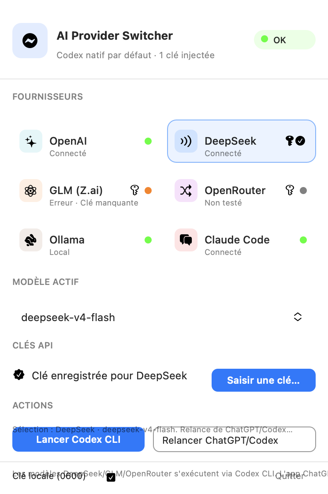

Le moteur derrière votre mission
- Le provider et le modèle réellement interrogés
- Le transport API adapté localement
- La consommation et les quotas suivis
Basculez entre OpenAI, Claude, DeepSeek, GLM, OpenRouter, Ollama et OpenCode depuis la barre de menus — sans perdre MCP, le shell, apply_patch, vos plugins ou vos skills.
ProxyCodex ne remplace pas Codex. Il lui donne accès à d’autres moteurs tout en préservant l’environnement agentique que vous utilisez déjà.
Chaque push applicatif sur main déclenche la compilation, les tests, la création du DMG et la publication de la Release. Sparkle la propose ensuite aux Mac déjà équipés.
Votre nouvelle version entre dans le pipeline GitHub.
GitHub Actions valide Swift et assemble l’application universelle.
Le DMG et son flux sécurisé sont publiés sur GitHub Releases.
Sparkle détecte, télécharge et installe la nouvelle version.
Cloud, passerelle ou local : ProxyCodex rend chaque option lisible et garde les limites techniques visibles.
Aucune fenêtre permanente dans le Dock. Provider, modèle, quota et actions restent à portée de clic.
Les clés restent dans l’adaptateur local, jamais dans config.toml, les profils ou les arguments de processus.
Sauvegarde avant modification, surveillance bidirectionnelle et retour propre à la configuration OpenAI native.
Le site reprend les interactions du panneau macOS. Le code, les tests et les limites connues restent consultables publiquement.

Non. Il ajoute des routes vers d’autres fournisseurs et préserve le retour au provider OpenAI natif.
Non. Le DMG est téléchargé depuis GitHub Releases et les mises à jour sont distribuées directement avec Sparkle.
Oui, lorsqu’un push sur main modifie le code de l’application. Le site seul peut évoluer sans créer inutilement une Release macOS.
Pas pour publier sur GitHub. Un certificat Developer ID reste recommandé pour éviter l’alerte Gatekeeper et permettre une notarisation professionnelle hors Store.
Installez directement ProxyCodex depuis GitHub et laissez les prochaines versions venir à vous automatiquement.